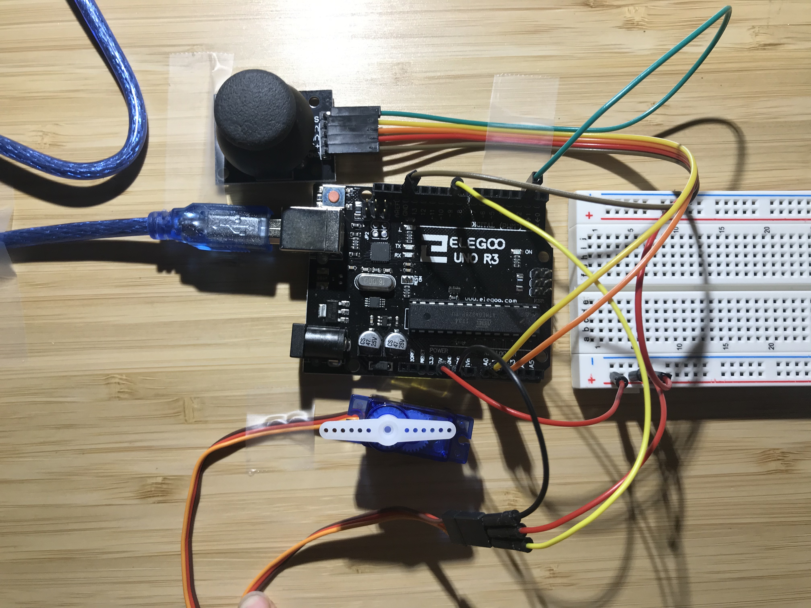
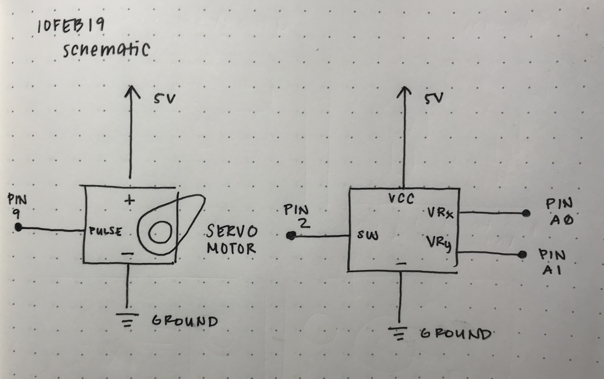
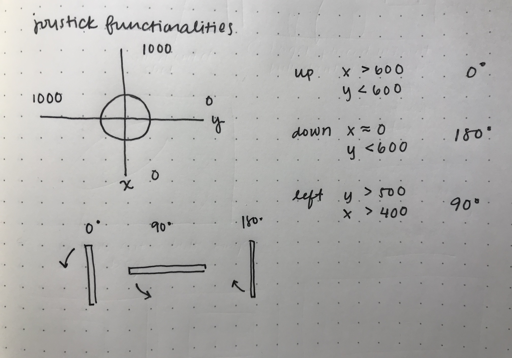

Reine Abubakar's Assignment 5
Code Snippet
// Reine Abubakar
// HCDE 439
// A5: Motors!
// This program allows the user to control a servo motor
// using a joystick.
#include < Servo.h >
const int servoPin = 9; // Input pin that servo motor is attached to
const int joystickX = A0; // Analog input pin that reads joystick X value
const int joystickY = A1; // Analog input pin that reads joystick Y value
int xval = 0; // Measured X value of joystick
int yval = 0; // Measured Y value of joystick
Servo myServo; // Creates servo object
// Initializes once the board is reset
void setup() {
Serial.begin(9600); // Initializes serial communications at 9600 bps
myServo.attach(servoPin); // Attaches servo to its corresponding pin
}
void loop() {
xval = analogRead(joystickX); // Reads joystick X value from input pin
yval = analogRead(joystickY); // Reads joystick Y value from input pin
// Determines how the joystick orientation will turn the servo motor
if (xval == 0 && yval < 600) {
// If the joystick is facing down, the motor will spin the full 180 degrees
myServo.write(180);
} else if (xval > 400 && yval > 500) {
// If the joystick is facing left, the motor spins 90 degrees
myServo.write(90);
} else if (xval > 600 && yval < 600) {
// If the joystick is facing up, the motor will spin up at 0 degrees
myServo.write(0);
}
}
Circuit
The circuit is composed of one joystick and a servo motor. The joystick orientation controls the angle which the servo motor rotates.
Schematic
 This was planned by figuring out which values of x and y correspond to which joystick orientation. Once I was able to determine what these values were, I figured out which degree value of the servo motor they should correspond to. This was dependent on how the joystick and motor were arranged on my table. I had mapped it out on two axes and chose values for which the joystick would be pointed up/down/left.
Circuit Operation

It is coded such that if the joystick is pushed up, the motor is at 0 degrees; if the joystick is pushed to the left, the motor propeller faces left at 90 degrees; and if the joystick is pushed down, the motor spins 180 degrees.